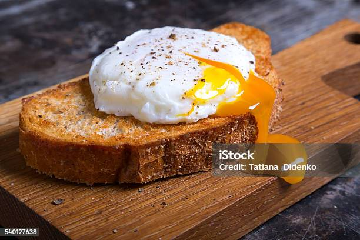

Poached Eggs Recipe

Description
Today we are going to learn how to make
Poached Eggs. Let's look at the ingredients list and get started.
Ingredients
- 1 tablespoon distilled white vinegar
- 2 teaspoons salt
- 3 eggs
Directions
- Fill a large sauce pan with 2 to 3 inches water and bring to a boil over high heat
- Once it starts boiling, reduce heat to medium-low and pour in your vinegar and salt
- Keep the water at a gentle simmer
- Crack an egg unto a small bowl. Hold the bowl just about the water surface and gently slip eggs into the simmering water
- Poach eggs until whites are firm and yolks have thickened but are not hard. This takes about 2 to 3 minutes
- Remove eggs with a slotted spoon and dab them on a paper towel to remove excess water.
- You can place these eggs on top of a toast or a burger bun for breakfast.
Home